Implicit MPM soil in Newton: validation against published granular, sand, soil and clay experiments
Six published experiments with open force data, replicated as built, predicted from independent parameters, calibrated on declared training sets and validated on held-out conditions, with a separate study of numerical uncertainty, and a robot rake calibration workflow demonstrated on synthetic logs.
Abstract
Robots that dig, rake or walk on soil can only learn from a simulator whose soil forces are right. We test Newton’s implicit material point method (MPM), with a rigid-plastic Drucker–Prager material, against six published experiments with open force data: plate intrusion in five granular media, rod intrusion into sand, glass beads and a lunar simulant at controlled packing, rod pull-out from sand, probe penetration into dry sandy loam, plate sinkage in moist field sand and strip plates in clay at 100 g. Each experiment is replicated as published, predicted from independently measured parameters, calibrated on a training set declared in advance and validated on held-out conditions, with the observation scale tied to the experimental scatter. Numerical uncertainty is assessed separately by refining the voxel size, particle count, time step and solver iterations and by exchanging the strain and contact bases. With friction from tabulated angles the model predicts loose and coarse granular media to 7–12 % of the largest measured force, but it misses the effect of packing and preparation: between loose and dense packings the rod resistance rises 5- to 16-fold while the model changes by 9–18 %; closely packed fine media are twice too stiff, pulled-out rods meet two- to fivefold the predicted resistance, probe forces in dry loam grow too slowly with depth, and plate pressures in moist sand reach tenfold the laboratory-parameter prediction. Calibrations on declared training sets were accepted for three of the five plate-intrusion media and rejected in validation for the two closely packed fine ones; a packing-dependent friction for sand stayed 1.2 observation scales from its training packings within the search budget, no friction pair fitted the pull-out of shallow and deep rods together, and the time-step check stopped four other calibrations before any fitting. Refining the voxels from 6 to 3 mm moved granular predictions by at most 2.2 observation scales, whereas the strain and contact bases changed forces by 50–120 %, and rheology solves capped at 250 iterations made rod forces speed-dependent by up to 22 %. In clay, halving the voxel removed most of the over-prediction of the narrow smooth plate. Packing- and state-dependent strength is the dominant missing physics for robot-relevant soils; calibrated parameters hold only within the material state and the numerical settings they were fitted at. A Franka rake workflow that calibrates soil from tool forces is accepted on synthetic logs.
Rise of rod resistance between loose and dense packings of sand, glass beads and a lunar simulant. With a constant friction the model rises by 9–18 %, with the bulk density.
Observation scales moved by refining granular voxels from 6 to 3 mm; the worst held-out errors keep their verdicts. Strain and contact bases moved forces by 50–120 %.
RMSE of the narrow smooth clay plate when the voxel is halved: its over-prediction was mostly a resolution artefact.
- Replicas of six open soil experiments covering intrusion, extraction, penetration and sinkage in granular media, sand, dry loam, moist field sand and clay, all with the same model and the same validation protocol (Table 1).
- Predictions from independently measured parameters, calibrations on declared training sets with held-out validation tied to experimental scatter, and a record of every configuration the protocol rejected.
- A study of numerical uncertainty (voxel size, particles per voxel, strain and contact bases, particle arrangement, time step, solver iterations, tool speed) that separates numerical artefacts from model error.
- A Franka FR3 rake workflow that calibrates soil from logged tool forces, demonstrated on synthetic logs.
1Introduction
Robot learning for digging, raking and legged locomotion relies on simulated soil forces. The material point method (MPM) (Sulsky et al., 1994) simulates large granular deformations, also for sand in graphics (Klár et al., 2016), and has been compared with intrusion experiments (Dunatunga & Kamrin, 2015), wheels (Agarwal et al., 2019) and the resistive force theory of granular intrusion (Li, Zhang & Goldman, 2013), (Askari & Kamrin, 2016). Newton’s implicit MPM (Newton contributors, 2026a) follows the semi-implicit formulation of Daviet & Bertails-Descoubes (2016) and is fast enough to run hundreds of soil worlds on one GPU, which makes calibration against measured forces practical.
A simulator is useful for robots only if its soil forces hold beyond the conditions it was tuned on, and only if what looks like agreement is not a numerical artefact. We therefore follow verification and validation practice (Oberkampf & Roy, 2010): replicate published experiments as built, predict them from parameters measured independently of the force data, calibrate on a training set declared in advance, validate on held-out conditions with acceptance limits tied to the experimental scatter, and assess numerical uncertainty separately. Revision 1 of this report applied the protocol to one granular medium and to clay; revision 2 extended it to five granular media. This revision adds four sand and soil experiments chosen because their data are open and their conditions matter for robots: packing, extraction, natural soil and moisture. It also adds the study of numerical uncertainty that the earlier revisions lacked.
2Methods
2.1Material model and force readout
SolverImplicitMPM represents the soil by particles that carry mass, velocity and plastic state on a sparse background grid. Every step solves for the grid velocities and the stresses that satisfy momentum balance, contact with colliders and the yield condition
where p is the mean pressure (compression positive), J2 the second invariant of the deviatoric stress, μ the friction coefficient, τy the yield stress and rtpy a tensile limit. This is the Drucker–Prager criterion (Drucker & Prager, 1952); we use its rigid-plastic limit (Young’s modulus 1015 Pa), so no elastic stiffness has to be calibrated. In plane-strain plastic flow √J2 = (σ1 − σ3)/2 and p = (σ1 + σ3)/2, and the Mohr–Coulomb criterion with friction angle φ and cohesion c maps to
Dry granular media have μ = sin φ and τy = 0, so that μ is the continuum friction √J2/p of dense granular flow models (Jop et al., 2006); undrained clay has μ = 0 and τy = su (Tresca). We use the plane-strain map (2) throughout, also for axisymmetric experiments, and treat the friction angle of the source as an input whose meaning (repose, critical state, peak) varies between sources. Packing enters the model only through the bulk density unless a packing law is calibrated (Section 2.3). Colliders are kinematic bodies with Coulomb friction. The force on a body is the sum of the impulses exchanged with its colliders during a step, divided by the step,
accumulated on the GPU for all worlds of a batch. All cases use eight particles per voxel, APIC transfer, trilinear velocities and the default sample-based (S2) collider basis; the strain basis is piecewise constant (P0) for granular media and linear discontinuous (P1d) for clay (Section 3.1).
2.2Experiments
We replicate seven experiments with open data or a documented protocol (Table 1, Figures 1 and 2): six physical experiments, whose protocols we follow as published, and one robot workflow demonstrated on synthetic logs. They span loading modes (intrusion, extraction, sinkage, cutting), materials from lab granular media to moist field sand and soft clay, and state variables that the model does or does not represent. Every replica uses the published geometry, speed or a quasi-static substitute (checked in Section 3.1) and the authors’ data processing where it is defined; Appendix A gives the protocol, the data processing and the unverified assumptions of each.
| Experiment | Material and state | Loading | Observable (repeats) | Independent parameters | Calibrated | Training / held out | |
|---|---|---|---|---|---|---|---|
| A | Plate intrusion (Li et al., 2013) | poppy seeds, 0.3 mm and 3 mm glass beads, loose (LP) and close (CP) packing: 5 media | 3.8 × 2.5 cm aluminium plate along straight paths, 78 orientation–direction pairs; 10 cm/s (1 cm/s) | stress per unit depth αz, αx (one value per pair) | μ = sin φ of the tabulated angle; plate friction 0.40 (measured, poppy seeds); bulk density | μ, plate friction | 5 / 73 motions per medium |
| B | Rod intrusion at controlled packing (Ruck et al., 2025) | silica sand, glass beads, LHS-1 simulant; 10–14 packings each, φ = 0.49–0.625 | 12.7 mm flat-ended rod, vertical to 10 cm; 10 cm/s (≤ 2 cm/s) | slope K of force against depth (1–5 runs per packing) | μ = sin φ of the authors’ angle (31.5°, 23.9°, 35.8°); bulk density | packing law: μ at the loosest, critical and densest packing | every third packing / the rest |
| C | Rod pull-out (Douglas et al., 2026) | medium sand, 1630 kg/m³ | buried vertical dowels and prints, 4.8–12.7 mm, 5–25 cm long, top 0–20 cm deep; 5 cm/s (≈ 2 cm/s) | peak pull-out force (8–11 trials) | μ = sin 30° (tilt table); rod–sand friction tan 21° (direct shear) | rod–sand friction; then also sand friction | 2 rods / 13 rods in 4 series |
| D | Probe penetration (Mishra et al., 2018) | oven-dried sandy loam, 1560 kg/m³ | probes with flat, elliptical, parabolic, conical and root-like tips, 7–11 mm, to 100 mm; 10 cm/s (10 mm/min) | force at 20–100 mm (4–7 runs) | bulk density; generic friction 35°, cohesion 2 kPa (no soil strength reported) | μ, cohesion | 11 mm flat and conical / 10 other probes |
| E | Plate sinkage (Kruger et al., 2023; Kruger, 2025) | moist Cullinan sand (6.5 % water), five preparation methods | 150 mm plate to 80 mm; 5 cm/s (16 mm/s) | pressure at 5–80 mm (1–6 tests per method) | μ = sin φ of the drained triaxial tests at the method’s density; cohesion 0 (in-situ shear) | μ, cohesion | method 4 / methods 3 and 5 |
| F | Strip plates at 100 g (Zwanenburg et al., 2024) | soft kaolin clay, two batches | 100 and 20 mm strip plates, smooth and rough; 0.1 m/s (5 mm/min) | net bearing pressure (one test each) | SHANSEP strength from laboratory tests | not completed | — |
| G | Robot raking (synthetic logs) | moist-sand prior | Franka FR3 rake strokes replayed from joint logs | tool force | generic sand guess | μ, cohesion, tool friction | 3 / 2 strokes |


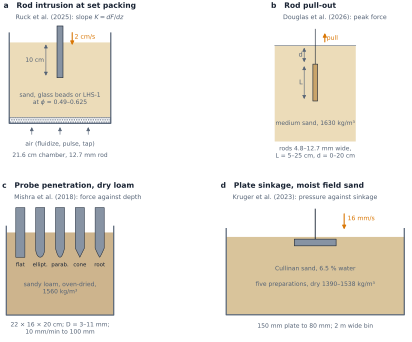


2.3Validation protocol
Each experiment passes through the same sequence, implemented by the lifecycle of newton-calibration (newton-calibration contributors, 2026) (Figure 3):
- Prediction from independent parameters. Parameters come from measurements outside the force data: tabulated or lab friction angles, bulk density from packing, laboratory strength. No parameter is adjusted.
- Numerical qualification. The training simulations are repeated with the time step halved, at the baseline and at probe points spread over the parameter box; a change of any training value larger than the tolerance δ = 1/√n observation scales, for n training values, ends the run as
rejected_numericsbefore any fitting. - Identifiability. Finite-difference sensitivities of the normalized residuals give the rank and conditioning of the local problem.
- Calibration on a training subset declared before any calibration run, with CMA-ES (Hansen & Ostermeier, 2001) as implemented in pycma (Hansen et al., 2026) or, for a single parameter, a grid search. CMA-ES searches the local parameter combinations of the identifiability analysis or, where these decode largely outside the bounds (the rake and the sand packing law), the normalized parameter box. A run ends as
no_feasible_candidateif no candidate keeps every training error within four scales, and asrejected_trainingif the best candidate misses the acceptance limits on the training set itself. - Held-out validation. The released parameters are simulated on all other conditions and accepted only if the held-out objective Jval ≤ 1 and no held-out sample is off by more than emax scales, and if the time-step refinement holds at the released parameters.
The objective is the mean squared normalized residual,
so that J = 1 corresponds to an RMSE of one observation scale s. Wherever repeated measurements exist, s is the experimental scatter (the standard deviation of repeated runs), so that acceptance means agreement within the measurement’s own variability; elsewhere it is a stated fraction of the measured range. Training sets, scales and limits (emax = 3, 4 for the rake) were fixed before the calibration runs of each experiment. The held-out data of the first granular medium were not blind (Section 3.2); all later experiments were.
Numerical uncertainty is assessed separately from the lifecycle (Section 3.1): voxel size, particles per voxel, strain and contact basis, particle arrangement, time step, solver iterations and, where the experiment is slower than the simulation, the intrusion speed. A result is called a model error only when it exceeds these numerical changes.
3Results
3.1Numerical verification and uncertainty
Benchmarks. Before any experiment, element tests with analytical answers fixed the strain basis and the solver settings (Table 2). The force read-back returns a static weight to 0.01 %. No single strain basis serves both materials: piecewise-constant strain (P0) reproduces Rankine’s passive pressure within 5 %, while linear discontinuous strain (P1d) over-predicts it by 20 %, consistent with locking in dilatant frictional flow; for undrained clay at 100 g the order reverses (P0 transmits 5.4 of about 42 kPa, P1d 37.3 kPa). Unconverged rheology solves relax stress: with 500 iterations a resting clay layer at 100 g crept and compacted by 25 % within 0.1 s, so clay runs allow 2000 iterations.
| Test | Setup | Reference | Newton MPM |
|---|---|---|---|
| Force read-back | column 0.1 × 0.1 × 0.05 m, 1000 kg/m³, on a kinematic plate; h = 5 mm | weight | within 0.01 % |
| Plane-strain compression | Tresca block, su = 5 kPa, smooth platens | σ1 − σ3 = 2 su | 1.85 su (93 %), limited by solver convergence |
| Rankine passive pressure | smooth wall pushed 20 mm into a frictional bed, φ = 36°; h = 5 mm | Kp = 3.85 (Rankine, 1857) | P0: 4.03 (+5 %); P1d: 4.62 (+20 %) |
| Prandtl bearing capacity | smooth strip, B = 40 mm, weightless Tresca clay; h = 2.5 mm | Nc = 5.14 (Prandtl, 1920) | 4.96 rigid-plastic (−3.5 %); 4.40 with elastic modulus 400 su and 500 iterations |
| Plate on uniform clay at 100 g | B = 100 mm, su = 6 kPa, mean pressure over 5–30 mm | ≈ 42 kPa (≥ 30.8 kPa at 0 g) | P0: 5.4 kPa (22.5 at 0 g); P1d: 37.3 kPa (27.1 at 0 g) |
| Resting clay layer at 100 g | 6 kPa clay for 0.1 s | no motion | ≤ 500 iterations: creeps, 25 % compaction; 2000: stable |
Discretization. For the granular experiments we repeated 11 diagnostic plate motions of experiment A (the five training motions, the worst held-out motion of each medium and the face-on drag) in all five media, with literature and calibrated parameters, under six numerical variants (Figure 4a). A second random particle arrangement moved the predictions by at most 0.12–0.42 observation scales, the noise floor. Refining the voxels from 6 to 4 and 3 mm moved them by at most 0.81 scales with calibrated parameters and 2.2 scales with the literature parameters of dense poppy seeds, whose forces are largest; the broadside lift changed by 0.3–3.2 %. The worst held-out errors keep their verdicts, so no acceptance decision is likely to change, although we did not rerun all 73 held-out motions: the two rejected dense media keep their worst error at the same shallow intrusion at 6, 4 and 3 mm (3.5–3.6 and 5.4–5.6 scales), and their simulated shallow-to-broadside lift ratio stays at 0.63–0.66 and 0.44–0.46 against the measured 0.93 and 0.91. Twenty-seven instead of eight particles per voxel raised the broadside lift by 8–10 %. The strain and contact bases matter far more: the pic27 contact basis raised forces by 50–58 % and the P1d strain basis by 87–118 %, both far outside the measurements at literature parameters. P0 strain with the S2 contact basis is the only combination of those tested that agrees with independently parameterized granular experiments, and calibrated parameters belong to it.
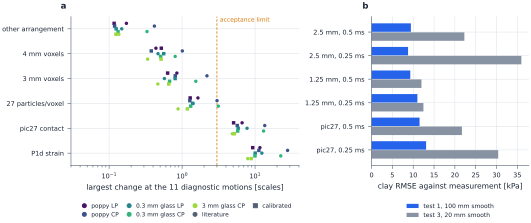


Time step, solver iterations and speed. Table 3 collects the step-refinement and speed checks of every experiment. Two results changed the configuration of revision 3. First, the rod forces depended on the tool speed although the material model is rate-independent: at 2 instead of 10 cm/s, with at most 250 rheology iterations, the slope K of experiment B fell by 14–22 %. A 1 s rest before intrusion changed K by 0.4–2.3 %, so the bed does not creep at rest; with 1000 iterations the speed effect shrank to 8–12 % and the 10 cm/s result rose by 3–5 %. Slow motion in many steps accumulates the error of incomplete solves. The rod, pull-out and probe experiments therefore run with 1000 iterations; the plate sinkage of experiment E, run with 250, changed by less than 1 % with 1000. We carry the remaining speed sensitivity of about 10 % as a numerical uncertainty; the results of experiment A, computed with 250 iterations, carry the same uncertainty (2–5 % between 5 and 10 cm/s). The plate of experiment E, with cohesion, changed by less than 1 % between 16 and 50 mm/s. Second, the time step was not sufficient everywhere: halving 1 ms changed the rod slopes by 4–8 % and the plate pressures by 5–10 %, so the calibrations of experiments B, D and E use 0.5 ms with a 0.25 ms refinement. Even then, halving the step in the lifecycle’s qualification changed the training values by 3–7 % at the baseline and mid-box probes, by 13–18 % for glass beads at their literature friction, and by 3–16 % at the stiff corner of each parameter box (high friction or cohesion). Measured in observation scales, these changes exceeded the tolerance at the stiff corner for glass beads, LHS-1, the loam probes and the plate, and already at moderate parameters for glass beads and the probes, so the lifecycle stopped those calibrations as rejected_numerics before any fitting. In clay, finer voxels reduced the time-step dependence (Section 3.6).
| Configuration used | Time step | Speed and iterations | Domain and resolution | |
|---|---|---|---|---|
| A Plate intrusion | 6 mm voxel, 1 ms (0.5 ms for poppy CP), ≤ 250 iterations | 2 ms rejected (0.083 N/cm³ vs δ = 0.03); 1 ms passed (≤ 0.013 N/cm³); poppy CP: 1 ms rejected, 0.5 ms passed | 5 vs 10 cm/s: 2–5 % | 4 and 3 mm voxels: ≤ 2.2 scales; arrangement: ≤ 0.42 scales (Figure 4a) |
| B Rod intrusion | 3 mm voxel, 0.5 ms, ≤ 1000 iterations, 10 cm/s | 1 → 0.5 ms: +4 to +8 % (sand, literature friction); 0.5 → 0.25 ms at the qualification probes: 3–6 % at friction 0.475–0.585 and at 0.825 (sand passed, ≤ 0.38 scales; LHS-1 rejected, 0.88 at 0.825), 13–18 % for glass beads at their literature friction 0.405 (rejected, 0.52; 1.98 at 0.825) | 2 vs 10 cm/s: −14 to −22 % (250 it.), −8 to −12 % (1000 it.); 1 s rest: 0.4–2.3 % (at 1 ms) | 2 mm voxels: +2 to +5 %; bed 26 instead of 15 cm deep: +1 to +3 %; 15 instead of 10.8 cm half-width: −2 to −6 % (at 1 ms, ≤ 250 it.) |
| C Rod pull-out | ¼ diameter voxel, 1 ms (0.5 ms when the sand friction is calibrated), ≤ 1000 iterations, 5 cm/s | rod friction only: 1 → 0.5 ms passed (0.10 scales, tolerance 0.71); with the sand friction: 1 → 0.5 ms rejected (1.40), 0.5 → 0.25 ms passed (0.35, although forces changed by up to 23 %: they are far below the measured ones) | experiment ≈ 2 cm/s | bed 12 diameters wide, 5 cm below the rod |
| D Probe penetration | ¼ diameter voxel, 0.5 ms, ≤ 1000 iterations, 10 cm/s | 1 → 0.5 ms over 20–100 mm: −2 to +13 % (11 and 9 mm), +6 to +24 % (7 mm); 0.5 → 0.25 ms: 5–7 % at the generic and a mid-box parameter set (0.17 and 0.60 scales), 16 % (35 N; 7.9 scales) at the stiff corner (friction 0.74, cohesion 22.5 kPa): calibration stopped | experiment 10 mm/min | rectangular bed of the container’s half-axes |
| E Plate sinkage | 10 mm voxel, 0.5 ms, ≤ 250 iterations, 5 cm/s | 1 → 0.5 ms: +5 to +10 %; 0.5 → 0.25 ms: 3–6 % at the lab and a mid-box parameter set, 10 % (94 kPa) at the stiff corner (friction 0.71, cohesion 15 kPa): calibration stopped | 16 vs 50 mm/s: < 1 %; 1000 instead of 250 iterations: < 1 % (lab parameters) | 7.5 mm voxels: −2 to −8 %; bed 0.4 or 0.65 m deep: ±2 % (at 1 ms, friction 0.57, cohesion 10 kPa); half-width 0.3 → 0.45 m: +25 %, 0.45 → 0.6 m: < 1 % at 80 mm (exploratory, friction 0.54, cohesion 10 kPa; used: 0.6 m) |
| F Clay at 100 g | 2.5 mm voxel, 0.5 ms, ≤ 2000 iterations | 1 → 0.5 ms: mean error +4.4 to +22.7 kPa (rejected); 0.5 → 0.25 ms: +5.8 to +25.1 kPa; at 1.25 mm: +3.0 and +8.0 kPa (tests 1, 3) | 0.1 m/s vs 5 mm/min | 1.25 mm voxels: test 3 RMSE 22.3 → 12.0 kPa |
| G Robot raking | 10 mm voxel, 2 ms, ≤ 250 iterations | 2 → 1 ms: up to 2.4 N (passed, δ = 3 N) | as logged | — |
Contact artefacts. Per-step force records show artefacts that window averages hide (Figure A4): on the clay’s regular particle lattice the plate force collapses for a few steps at every layer of particle centres, lowering 1 mm window means by 9–14 % relative to the medians, and in jittered granular beds the force oscillates with the voxel period between 0.7 and 1.3 times its trend. The fits and window means of all experiments average over these oscillations.
3.2Plate intrusion in five granular media (A)
With friction from each medium’s tabulated angle, the plate replica predicts the stress per unit depth at all 78 motions of the two loosely packed media and the coarse glass to 7–12 % of the largest measured lift (Figure 5, Table A1). The two closely packed fine media, poppy seeds and 0.3 mm glass, are over-predicted about twofold. Calibrating soil and plate friction on five motions per medium was accepted for the three loose and coarse media, with held-out lift errors of 4–5 % of the largest lift and an effective plate friction of 0.18–0.23 against the 0.40 measured for aluminium on poppy seeds. It was rejected for the two closely packed fine media: their held-out errors fell by 67–82 %, but shallow intrusions kept too little lift (3.5 and 5.6 scales against a limit of 3). In these two media the shallow intrusion of a horizontal plate carries 91–93 % of the broadside lift, against 59–66 % in the other three and 44–69 % in every calibrated model, at every voxel size and particle count tested (Section 3.1). The held-out motions of the first medium, loosely packed poppy seeds, were not blind: its training set and bounds were chosen after its literature sweep and a rejected first calibration; the rules for the other four media were fixed before their runs.


3.3Packing: rod intrusion into sand, glass beads and a lunar simulant (B)
Ruck et al. prepared each bed at a set packing fraction φ by fluidization, pulsed air or tapping, and measured the force on a 12.7 mm rod pushed 10 cm deep. Between loose and dense packings the slope K of force against depth rises 6.4-fold in sand (109 to 695 N/m between φ = 0.55 and 0.615), 4.9-fold in glass beads (42 to 208 N/m) and 16-fold in the LHS-1 simulant (45 to 723 N/m between φ = 0.50 and 0.58; a single run at φ = 0.49 gave 90 N/m), while the bulk density rises by 12–16 % (Figure 6). With a constant friction from the authors’ angle the replica changes only with the bulk density: it over-predicts the loosest beds (by 22 % in sand, 44 % in glass beads and two- to fourfold in LHS-1) and reaches 21–33 % of the measured slope at the densest packing. The constant friction matches the measurement at only one packing per medium: φ ≈ 0.57 in sand and 0.58 in glass beads, below the critical packing fractions 0.59 and 0.595 that Ruck et al. identify, and φ ≈ 0.545 in LHS-1, above its 0.53.
Calibrating the packing law on every third packing passed the time-step check for sand (0.38 observation scales against a tolerance of 0.45) and identified all three frictions (rank 3); for glass beads and LHS-1 the check failed (Table 3) and the calibrations stopped before fitting. For sand the lifecycle rejected the calibration in training. After eight generations of six candidates, the best law, with friction 0.46 at the loosest, 0.56 at the critical and 0.70 at the densest packing, follows the 3.4-fold rise across the training packings but lies below every one of them, by 1.19 observation scales RMS against a limit of 1 (largest error 2.1, at φ = 0.595). The best objective of each generation still varied between 1.4 and 15, so the search budget, not necessarily the form of the law, set this result; we did not extend the budget a second time. As a diagnostic outside the lifecycle, the same law predicts the held-out packings up to φ = 0.600 within 2.9 scales, all too low, but reaches only 75 % of the measured slope at φ = 0.605 and 57 % at the densest packing, φ = 0.615, where the measured slope nearly doubles from 367 to 695 N/m (two runs) within 0.005 in packing (Figure 6). Two earlier sand runs are part of the record: the first exhausted its 6 h compute budget during the sensitivity analysis, and the second searched in the rotated coordinates of that analysis, where 16 of its 30 candidates decoded outside the bounds; the final run searches the parameter box itself, as the rake calibration does.
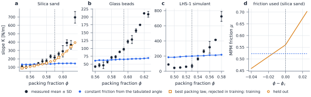


3.4Extraction and dry loam: rod pull-out (C) and probe penetration (D)
Pull-out. With the tilt-table friction of the sand and the interface friction measured for wooden dowels, the simulated peak pull-out force is 20–54 % of the measured one for all 15 straight rods (Figure 7). The deficit does not depend on the parameter that would explain it at the interface: a grid search over the rod–sand friction from 0.2 to 4 never reached the training forces. The simulated peak rises with the rod friction to about 31 % of the measured force near 0.5, the friction of the sand itself, and stays at 14–29 % for any higher value up to 4, presumably because failure then moves from the interface into the sand. The search ended without a feasible candidate. Douglas et al. attribute the high shaft resistance of their rods to dilation constrained by the surrounding sand, which raises the normal stress on the rod; the rigid-plastic model has no such mechanism. Calibrating the sand friction as well, with the rod friction bounded to physical values (at most 1), failed the time-step check at 1 ms (1.40 scales at the stiff corner against a tolerance of 0.71) and passed it at 0.5 ms (0.35); both parameters were identifiable (rank 2), but no candidate met the training limits: the best, with sand friction 0.89 and rod friction 0.57, reached 0.7 and 4.2 N against the measured 3.3 and 7.5 N. Because 10 of the 30 candidates fell outside the bounds in the rotated search coordinates of the lifecycle, we also simulated the stiffest corner of the box, sand friction 0.95 and rod friction 1.0. It confirms the outcome and shows its cause (Figure 7): the 15 cm rod then reaches 106 % of its measured force but the 10 cm rod only 30 %, and while all rods of at most 10 cm that reach the surface stay at 22–39 %, the longer and the buried rods reach 84–186 %. The simulated force grows far more steeply with length and burial depth than the measured one, so no pair of friction coefficients fits shallow and deep rods together. Dilation, which raises the normal stress most where the confining stress is low, would act in the measured direction.
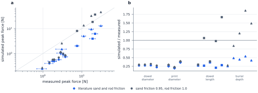


Probe penetration. Mishra et al. report no strength for their oven-dried sandy loam, so the prediction uses a generic friction of 35° and a cohesion of 2 kPa. With these the simulated force grows too slowly with depth: it exceeds the measurement at 20 mm for 13 of 15 probes but reaches only 40–63 % of it at 100 mm, because the measured force rises about linearly with depth while the simulated force bends over (Figure 8). The model separates the flat tip from the pointed tips (49 against 37–38 N at 11 mm) but not the pointed tips from each other, whose measured forces at 100 mm differ by 24 % (70–88 N). The calibration of friction and cohesion on the 11 mm flat and conical probes, at 0.5 ms, was stopped by the time-step check: halving the step changed the training forces by 5–7 % at the generic and a mid-box parameter set and by 16 % at the stiff corner of the box (friction 0.74, cohesion 22.5 kPa). Because the run-to-run scatter of the probes is small, the mid-box and corner changes (0.6 and 7.9 observation scales) exceed the tolerance of 0.32. Forces at the measured level need a finer time step than we could afford, so we report no calibrated loam; the geometry transfer between tip shapes remains untested beyond the generic prediction.
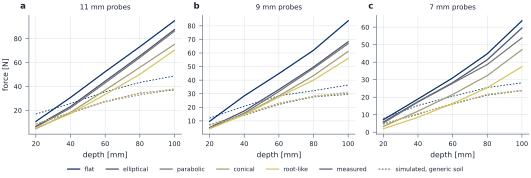


3.5Moist field sand: plate sinkage (E)
Kruger et al. prepared Cullinan sand at 6.5 % water by five methods, from loose raking to vibratory compaction, and pushed a 150 mm plate 80 mm into it. With the friction of their drained triaxial tests at each method’s density (33.0°, 34.5° and 37.5° for methods 3, 4 and 5) and no cohesion, as their in-situ shear tests imply (peak shear stress 53–65 kPa at 93 kPa normal stress), the replica predicts 44–77 kPa at 80 mm against 419–660 kPa measured, about a tenth (Figure 9). Moist sand has a suction cohesion that the shear tests do not resolve at a single normal stress, and a coarse grid over friction and cohesion locates the best fits at 5–10 kPa of cohesion. Even the best grid point misses the shape of the curves by 64–95 kPa RMSE, however. Cohesion lets the pressure jump at contact and then rise slowly, while the measured pressure keeps rising, by about 5 kPa per mm in methods 3 and 4. With equal friction and cohesion the replica changes by less than 4 % between the densities of methods 3 and 5 (11 % without cohesion, in proportion to the density), while the measured pressures differ by 58 % at 80 mm and by a factor of 3.4 at 10 mm. The calibration of friction and cohesion on method 4 was stopped by the time-step check for the same reason: halving the 0.5 ms step changed the pressure by 3–6 % at the lab and a mid-box parameter set but by 10 % (94 kPa, 1.3 observation scales against a tolerance of 0.41) at the stiff corner (friction 0.71, cohesion 15 kPa). Kruger et al. (2026) modelled the same tests with NorSand, a density-dependent critical-state model, in a finite-element code, the class of model this result calls for.
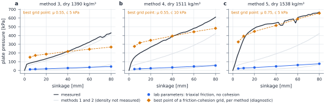


3.6Strip plates in clay at 100 g (F)
With the laboratory SHANSEP strength and no fitted parameter, the wide smooth plate (test 1) follows the measured curve over its whole penetration at the 2.5 mm voxel and 0.5 ms step of revision 1: 9.6 kPa RMSE, mean error −0.1 kPa (Figure 10, Table A2). The narrow smooth plate (test 3), only four voxels across its half-width, was over-predicted (22.3 kPa RMSE), and halving the step raised the mean error of every test. The resolution study separates these effects. At 1.25 mm the narrow smooth plate’s RMSE falls to 12.0 kPa at 0.5 ms and 12.5 kPa at 0.25 ms, against 22.3 and 36.0 kPa at 2.5 mm, and its mean error from +15.7 to −4.6 kPa. The wide plate stays within 8.8–11.0 kPa across resolutions and steps. Halving the step from 0.5 to 0.25 ms raises the mean errors by 3.0 and 8.0 kPa at 1.25 mm, against 5.8 and 13.6 kPa at 2.5 mm. Much of the over-prediction of the narrow plate and of the time-step dependence was therefore spatial resolution. The pic27 contact basis did not help (RMSE 11.5–30.4 kPa). The rough plates (tests 6 and 8) used a second clay batch and remain over-predicted at 2.5 mm, by 32–42 kPa on average; they were not rerun at 1.25 mm, so roughness, batch and resolution cannot be separated for them. Since the time step still matters at 1.25 mm, the clay replica is not yet converged, and we report no calibrated clay model.


3.7Robot raking on synthetic logs (G)
The rake workflow exports a stroke plan to the Franka FR3, replays the logged joint positions in Newton and calibrates soil friction, cohesion and tool friction on three training strokes. On synthetic logs, generated by Newton at half the time step with sensor filtering, offsets and noise, the calibration was accepted with 1.0–2.0 N RMSE per stroke, held-out strokes included. Soil friction was recovered within 6 %, whereas cohesion (33 % low) and tool friction (52 % high) absorbed the difference between the generating and the calibrated simulation: the hidden parameters score no better at the calibration’s 2 ms step (objective 0.345 against 0.326), and the accepted set scores 0.43 at the generating 1 ms step. Appendix A7 gives the strokes, forces and search.
3.8Across experiments
Table 4 summarizes the outcome of every experiment. Predictions from independent parameters hold for loose and coarse dry granular media and for the wide clay plate, and fail by up to a factor of ten wherever packing, preparation or soil structure sets the strength: they are about twice too stiff for closely packed fine media and too weak for dense sand, pull-out, dry loam at depth and moist field sand. Calibration on a declared training set was accepted only where a single friction fits the trend of an experiment (three media of A). In the new experiments it failed for three different reasons, which the lifecycle keeps apart: the model cannot reproduce the measured trend (pull-out, no feasible parameters), the search did not reach the training limit for a three-parameter law (sand, 1.19 against 1 observation scale), or the time step is not converged over the parameter range that the measured forces require (glass beads, LHS-1, the loam probes and the moist sand).
| Prediction from independent parameters | Calibration and held-out validation | Outcome | Main limitation | |
|---|---|---|---|---|
| A Plate intrusion, 5 media | loose and coarse media: 7–12 % of the largest lift; dense fine media about twice too high | held-out objective 0.32–0.57, largest error ≤ 2.3 (3 media); 0.59 and 0.77 with largest errors 3.5 and 5.6 (2 dense media) | accepted 3, rejected 2 | lift of shallow intrusions in dense packings |
| B Rod intrusion vs packing | slope +22 to +44 % (two- to fourfold for LHS-1) at the loosest, −67 to −79 % at the densest packing | sand: the best packing law stays 1.19 scales RMS below the training slopes after 48 candidates (limit 1) and, as a diagnostic, reaches 57 % of the densest held-out slope; glass beads and LHS-1 stopped at the time-step check | sand rejected in training; 2 not calibrated | packing-dependent strength |
| C Rod pull-out | 20–54 % of the measured peak force | no rod friction from 0.2 to 4, and no pair of sand friction ≤ 0.95 and rod friction ≤ 1, fits both training rods: at the stiffest corner the 15 cm rod reaches 106 % and the 10 cm rod 30 % of its measured force | no feasible candidate | dependence on embedment; dilation near the surface |
| D Probe penetration | 40–63 % of the measured force at 100 mm (generic soil) | stopped at the time-step check (16 % at the stiff corner of the box) | not calibrated | soil strength unreported; depth scaling |
| E Plate sinkage | about a tenth of the measured pressure at 80 mm | grid diagnostic: best fits at 5–10 kPa cohesion, 64–95 kPa RMSE, wrong curve shape; lifecycle stopped at the time-step check (10 % at the stiff corner) | not calibrated | preparation state, compaction, suction |
| F Clay at 100 g | wide plate 9.6 kPa RMSE; narrow plate 22.3 kPa (12.0 at 1.25 mm); rough plates 41–43 kPa | not completed | not validated | time step not converged; roughness confounded with clay batch |
| G Robot raking (synthetic) | baseline guess 8.1 N RMSE on the training drag | 1.0–2.0 N RMSE per stroke, held-out objective 0.67 | accepted | logs synthetic; model mismatch biases cohesion and tool friction |
4Discussion
What the validation supports
With friction from a tabulated angle and the bulk density, Newton’s rigid-plastic MPM predicts tool forces in loose and coarse dry granular media to 7–12 % of the largest measured force (A), and with laboratory strength it predicts a wide plate in soft clay at 100 g (F). Within one material and preparation, calibrating two or three parameters on a few conditions predicts held-out conditions of the same experiment within the experimental scatter (three media of A). These statements hold for the resolutions, time steps and solver settings tested, which move the predictions by less than the acceptance limits (Section 3.1).
Packing and state are the missing physics
Every failure of the predictions from independent parameters has the same cause: the strength of the real material depends on its state, which a single friction angle does not describe. With the friction of their tabulated angle, dense fine media are twice too stiff, yet no single friction also gives the large lift of their shallow plate motions (A); rod resistance rises 5- to 16-fold with packing while the model follows only the 12–16 % rise of the bulk density (B); rods near the surface resist pull-out two- to fivefold more than the model at any friction within physical bounds, while deep rods are matched or exceeded at high friction (C); dry loam stiffens with depth faster than the model (D); and compaction raises the plate pressure in moist sand by a factor of 3.4 at 10 mm, while the model with equal parameters changes by at most the 11 % of the bulk density (E). The mechanisms are familiar from soil mechanics (Been & Jefferies, 1985), (Bolton, 1986): dense packings dilate when sheared and loose ones compact, so that strength and stiffness depend on the state relative to a critical state, and moisture adds suction. Newton’s implicit MPM offers a dilatancy coupling and compaction hardening of a yield cap, but in exploratory runs (data) the dilatancy coupling raised the densest sand slope of B by at most 30 % instead of fivefold, and the hardening model made loose moist sand softer without reproducing its stiffening. A packing-dependent friction law comes close for sand, with a friction rising from 0.46 at the loosest to 0.70 at the densest packing (Section 3.3), but it is an effective description: it fixes the state at the start of a simulation, cannot follow packing changes during it, and misses the near-doubling of the slope at the densest packing. State-dependent critical-state models, such as the NorSand model that Kruger et al. (2026) applied to experiment E, are the natural next step, and the datasets used here can test them.
Numerical choices matter as much as parameters
Four numerical choices each changed forces by more than the calibration tolerances: the strain basis (factor of seven for clay at 100 g, 87–118 % for granular plates), the contact basis (50–58 %), the rheology iterations (up to 22 % through a spurious speed dependence) and, for clay, the spatial resolution (narrow-plate RMSE halved). Each would have been absorbed into material parameters by a calibration that did not check it. Calibrated parameters are therefore effective values for the numerical settings they were fitted at; the lifecycle stores those settings with the released asset. From this study we recommend, for any simulator calibration of soil forces:
- Benchmark the strain and contact bases per material against analytical limit loads before calibrating.
- Check the time step by refinement at the probes and at the released parameters, and check that a rate-independent model is rate-independent in the simulation (speed and solver iterations).
- Report a resolution and particle-arrangement study and compare its changes with the acceptance limits.
- Inspect per-step tool forces for contact artefacts before fitting window averages.
- Tie observation scales to the experimental scatter and declare training sets and limits before the runs.
- Predict from independent parameters first; a calibration that has to move a parameter far from its measured value points at missing physics, not at a better parameter.
Toward robot data
For robots the practical consequence is that soil state must be part of what is identified. A friction calibrated on one tool, depth and packing transfers within that state (A) but not across preparation states (E) or embedment depths (C). The rake workflow (G) provides the pipeline from a robot’s force log to a validated soil asset; its demonstration shows that parameters recovered from logs are only as physical as the agreement between the logged and the simulated numerics, and that strokes should load the parameters differently, for example by combining vertical penetration with a slow sideways slide.
5Limitations
- The material is rigid-plastic Drucker–Prager or Tresca without dilatancy, compaction, suction or rate effects in the scored configurations; packing enters only through the bulk density or a calibrated packing law.
- Several protocol details are not stated in the sources and are assumed (Appendix A): bed depth and chamber shape in B, pull speed and basin size in C, tip lengths, start gap and container fill in D, bin depth in E. Sensitivity checks cover the assumptions that could be simulated.
- The simulated tools move faster than the experimental ones; with 1000 rheology iterations the remaining speed sensitivity of the rod forces is about 10 %, and experiment A carries 2–5 %.
- Measured forces in B come from motor current, which fixes slopes better than absolute forces; C uses published peak forces because the traces are truncated; D corrects load-cell offsets; methods 3–5 of E are single tests.
- The held-out motions of the first medium of A were not blind; all later experiments declared their splits before calibrating.
- The clay replica is not converged with the time step, its rough tests confound roughness, clay batch and resolution, and its calibration was not completed.
- The rake demonstration uses synthetic logs. Each calibration ran once, except the sand calibration of B, which was restarted twice (Section 3.3); its rejection in training may reflect the search budget. Results apply to the stated Newton and Warp revisions, numerical settings and GPUs.
6Conclusion
Implicit MPM in Newton predicts soil–tool forces from independently measured parameters for loose and coarse dry granular media and for undrained clay, and calibrations on a few conditions predict held-out conditions of the same material state within the experimental scatter. Across six published experiments, the predictions fail by up to a factor of ten wherever packing, preparation or soil structure sets the strength: they are too stiff for closely packed fine media and too weak for sand at high packing, rod pull-out, dry loam at depth and moist field sand. Verification was essential throughout: strain and contact bases, solver iterations and spatial resolution each changed forces by more than the calibration tolerances, and the resolution study turned most of an apparent model error of the narrow clay plate into a numerical one. Packing- and state-dependent strength is the main missing physics for robot-relevant soils. We release the processed data, simulation cases, figures and scripts so that the scores can be checked and the experiments used to test state-dependent soil models in simulation.
Data and code availability
The simulations are the examples/mpm_soil case of newton-calibration (newton-calibration contributors, 2026), prepared as a contribution based on commit c52a6ce and not yet merged at the time of writing. It holds one sub-case per experiment (rft_plate, rod_intrusion, rod_pullout, probe_penetration, plate_sinkage, clay_plate, franka_rake), the processing of every dataset from its original download with SHA-256 checks (data/prepare.py), and CPU tests. The simulations ran on Newton 9deb629 (1.9.0.dev0) and Warp 1.20 development builds (NVIDIA and Warp contributors, 2026) with Python 3.12, NumPy 2.5.5 and pycma 4.6.0: the first granular medium, the clay at 0.5 and 1 ms and the rake on one NVIDIA RTX PRO 6000 Blackwell Workstation Edition GPU with Warp 1.20.0.dev20261117, everything else on NVIDIA L40S GPUs through NVIDIA OSMO (NVIDIA, 2026) with Warp 1.20.0.dev20261120, which reproduced a workstation sweep to within 0.0003 N/cm³. The sand calibration of experiment B spread the worlds of every batch over four GPUs, which does not change the results.
Downloads. Plate intrusion, five media · first medium, 78 points · its calibration record · and search · at 0.5 ms · rod intrusion · rod pull-out · probe penetration · plate sinkage · discretization study · exploratory runs · clay at 0.5 ms · at 1 ms · at 0.25 ms · clay per-step force · at 0.25 ms · granular per-step force · rake calibration · rake traces · rake search · rejected runs of revision 1 · source hashes · provenance · figure captions · report PDF · BibTeX · SHA256SUMS
The data files are compact extracts of the archived runs: predictions, objectives, parameters and curves. Measured values of Li et al. (2013) are not redistributed; the processing script regenerates them from table S5. The other datasets are CC BY 4.0 or CC0 and their processed extracts are in newton-calibration. The rake logs are synthetic. scripts/export_data.py, export_media.py and export_studies.py derive the data files, probe_force_time_series.py records per-step forces, and make_figures.py with figures_rev3.py draws every figure. scripts/osmo/ and scripts/osmo-rev3/ hold the cluster job generators, task runners and analysis scripts.
Reproduce the runs
# newton-calibration checkout with the examples/mpm_soil case, Newton at 9deb629
python -m pip install -e ".[cma]" && python -m pip install -e /path/to/newton matplotlib pillow xlrd openpyxl unrar-cffi
python -m examples.mpm_soil.data.prepare # download, verify and process all six datasets
python -m examples.mpm_soil.verify # re-score the archived predictions on CPU
python -m examples.mpm_soil.rft_plate.run calibrate --medium glass_0p3mm_LP --workspace workspace/mpm-rft-glass
python -m examples.mpm_soil.rod_intrusion.run sweep --medium sand --parameters literature
python -m examples.mpm_soil.rod_intrusion.run calibrate --medium sand --workspace workspace/mpm-rod --devices cuda:0 cuda:1 cuda:2 cuda:3
python -m examples.mpm_soil.rod_pullout.run sweep --parameters literature
python -m examples.mpm_soil.rod_pullout.run calibrate --workspace workspace/mpm-pullout
python -m examples.mpm_soil.rod_pullout.run calibrate --sand-friction --dt 0.0005 --workspace workspace/mpm-pullout-sand
python -m examples.mpm_soil.probe_penetration.run sweep --parameters generic --diameters 11 9 7 --shapes cylindrical elliptical parabolic conical root_like
python -m examples.mpm_soil.probe_penetration.run calibrate --workspace workspace/mpm-probe
python -m examples.mpm_soil.plate_sinkage.run sweep --parameters lab
python -m examples.mpm_soil.plate_sinkage.run calibrate --workspace workspace/mpm-plate
python -m examples.mpm_soil.clay_plate.run sweep --parameters laboratory
python -m examples.mpm_soil.franka_rake.run calibrate --workspace workspace/mpm-rakeRevision history
- 26 November 2026. First version: loosely packed poppy seeds, centrifuge clay at 0.5 ms and the rake workflow.
- 27 November 2026, revision 2. The four other media of Li et al., held-out results at 0.5 ms for the granular model and clay results at 0.25 ms.
- 28 November 2026, revision 3. Four new experiments (rod intrusion at controlled packing, rod pull-out, probe penetration in dry loam, plate sinkage in moist field sand); a study of numerical uncertainty (voxel size, particles per voxel, strain and contact bases, particle arrangement, solver iterations, speed), which found the narrow-plate over-prediction in clay to be mostly a resolution effect and a speed dependence caused by capped solver iterations; a restructured, shorter text with experiment details in Appendix A. Numbers of revisions 1 and 2 are unchanged except two corrections in clay: the 1 ms errors (Table A2) are now scored over the same depths as the other columns, which moves the change from 1 to 0.5 ms from 3.8–22.3 to 4.4–22.7 kPa, and the change from 0.5 to 0.25 ms is 5.8–25.1 kPa (was rounded to 5.7–25.2). Their configurations (250 iterations) carry the uncertainty stated in Section 3.1.
References
- Agarwal, S., Senatore, C., Zhang, T., Kingsbury, M., Iagnemma, K., Goldman, D. I., & Kamrin, K. (2019). Modeling of the interaction of rigid wheels with dry granular media. Journal of Terramechanics, 85, 1–14. doi:10.1016/j.jterra.2019.06.001
- Askari, H., & Kamrin, K. (2016). Intrusion rheology in grains and other flowable materials. Nature Materials, 15(12), 1274–1279. doi:10.1038/nmat4727
- Been, K., & Jefferies, M. G. (1985). A state parameter for sands. Géotechnique, 35(2), 99–112. doi:10.1680/geot.1985.35.2.99
- Bolton, M. D. (1986). The strength and dilatancy of sands. Géotechnique, 36(1), 65–78. doi:10.1680/geot.1986.36.1.65
- Daviet, G., & Bertails-Descoubes, F. (2016). A semi-implicit material point method for the continuum simulation of granular materials. ACM Transactions on Graphics, 35(4), 102. doi:10.1145/2897824.2925877
- Douglas, M. M., Colicci, V., Sandu, N. A., Yılmaz, L., Kamrin, K., & Perron, J. T. (2026). Effects of root architecture on plant anchoring in noncohesive sediment. Journal of Geophysical Research: Earth Surface, 131(8), e2025JF008680. doi:10.1029/2025JF008680. Data: Harvard Dataverse, doi:10.7910/DVN/VXRLSK (CC0 1.0).
- Drucker, D. C., & Prager, W. (1952). Soil mechanics and plastic analysis or limit design. Quarterly of Applied Mathematics, 10(2), 157–165. doi:10.1090/qam/48291
- Dunatunga, S., & Kamrin, K. (2015). Continuum modelling and simulation of granular flows through their many phases. Journal of Fluid Mechanics, 779, 483–513. doi:10.1017/jfm.2015.383
- Hansen, N., & Ostermeier, A. (2001). Completely derandomized self-adaptation in evolution strategies. Evolutionary Computation, 9(2), 159–195. doi:10.1162/106365601750190398
- Hansen, N., and pycma contributors (2026). CMA-ES/pycma, release 4.6.0. Zenodo. doi:10.5281/zenodo.2559634
- Jop, P., Forterre, Y., & Pouliquen, O. (2006). A constitutive law for dense granular flows. Nature, 441(7094), 727–730. doi:10.1038/nature04801
- Klár, G., Gast, T., Pradhana, A., Fu, C., Schroeder, C., Jiang, C., & Teran, J. (2016). Drucker–Prager elastoplasticity for sand animation. ACM Transactions on Graphics, 35(4), 103. doi:10.1145/2897824.2925906
- Kruger, R. (2025). Multi-scale Cullinan sand (fine sand) dataset: 18 triaxial, 6 bender-element shear wave tests and 52 in-situ field Bevameter plate-sinkage and in-situ shear tests. Zenodo. doi:10.5281/zenodo.17584463 (CC BY 4.0).
- Kruger, R., Crous, P. A., Trinidad, Y., & Tekeste, M. Z. (2026). Numerical modeling of plate sinkage and in-situ bevameter shear tests using FEM and the density-dependent NorSand critical state constitutive soil model. Journal of Terramechanics, 124, 101138. doi:10.1016/j.jterra.2026.101138
- Kruger, R., Els, P. S., & Hamersma, H. A. (2023). Experimental investigation of factors affecting the characterisation of soil strength properties using a Bevameter in-situ plate sinkage and shear test apparatus. Journal of Terramechanics, 109, 45–62. doi:10.1016/j.jterra.2023.06.002
- Ladd, C. C., & Foott, R. (1974). New design procedure for stability of soft clays. Journal of the Geotechnical Engineering Division, ASCE, 100(GT7), 763–786.
- Li, C., Zhang, T., & Goldman, D. I. (2013). A terradynamics of legged locomotion on granular media. Science, 339(6126), 1408–1412. doi:10.1126/science.1229163. Additional data table S5.
- Mishra, A. K., Tramacere, F., Guarino, R., Pugno, N. M., & Mazzolai, B. (2018). A study on plant root apex morphology as a model for soft robots moving in soil. PLOS ONE, 13(6), e0197411. doi:10.1371/journal.pone.0197411. Data: Zenodo, doi:10.5281/zenodo.1211631 (CC BY 4.0).
- Newton contributors (2026a). Newton: GPU-accelerated physics simulation. github.com/newton-physics/newton, revision 9deb629.
- Newton contributors (2026b). Newton assets: Franka FR3 description used by
newton.utils.download_asset("franka_emika_panda"). github.com/newton-physics/newton-assets. - newton-calibration contributors (2026). newton-calibration: calibration and validation of Newton simulations. github.com/newton-physics/newton-calibration, base revision c52a6ce.
- NVIDIA (2026). OSMO: a platform for scaling physical AI workloads across heterogeneous compute. github.com/NVIDIA/OSMO
- NVIDIA and Warp contributors (2026). Warp, versions 1.20.0.dev20261117 and 1.20.0.dev20261120. github.com/NVIDIA/warp
- Oberkampf, W. L., & Roy, C. J. (2010). Verification and Validation in Scientific Computing. Cambridge University Press. doi:10.1017/CBO9780511760396
- Prandtl, L. (1920). Über die Härte plastischer Körper. Nachrichten von der Gesellschaft der Wissenschaften zu Göttingen, Mathematisch-Physikalische Klasse, 74–85.
- Rankine, W. J. M. (1857). On the stability of loose earth. Philosophical Transactions of the Royal Society of London, 147, 9–27. doi:10.1098/rstl.1857.0003
- Ruck, J., Pradeep, S., Bush, J., Sigg, E., Qian, F., & Jerolmack, D. (2025). Unified granular intrusion dynamics for planetary materials. EarthArXiv preprint. doi:10.31223/X5246P. Data and code: Zenodo, doi:10.5281/zenodo.15610745 (CC BY 4.0).
- Sulsky, D., Chen, Z., & Schreyer, H. L. (1994). A particle method for history-dependent materials. Computer Methods in Applied Mechanics and Engineering, 118(1–2), 179–196. doi:10.1016/0045-7825(94)90112-0
- Zwanenburg, C., Wittekoek, B., Alderlieste, E., & Martinelli, M. (2024). Geometrical nonlinearities on the bearing capacity in clay: A validation data set for numerical tools. Journal of Geotechnical and Geoenvironmental Engineering, 150(10), 04024084. doi:10.1061/JGGEFK.GTENG-12104
- Zwanenburg, C., Wittekoek, B., Martinelli, M., Alderlieste, E., & Zwaan, R. (2023). Calibration chamber for numerical tools [data set: eight centrifuge plate loading tests]. Zenodo. CC BY 4.0. doi:10.5281/zenodo.8066899
Appendix A. Experiment details
Each entry gives the experiment as published, the processing of its data, the parameters and replica, the calibration design and the assumptions we could not verify in the source.
A1 Plate intrusion in five granular media (Li et al., 2013)
Experiment. An aluminium plate of 3.81 × 2.54 × 0.64 cm moved at 1 cm/s along straight paths through an air-fluidized bed 24 × 22 × 15 cm. For every attack angle β and intrusion angle γ the stress grows linearly with depth, σ = α(β, γ)|z|; table S5 lists αz and αx on a 7 × 13 grid (78 distinct points) for poppy seeds and 0.3 mm glass, each loosely (LP) and closely packed (CP), and closely packed 3 mm glass. Replica. Intrusions start with the plate at the surface, extractions at the deep end of the same path, horizontal drags run at 2.54, 5.08 and 7.62 cm; slopes are zero-intercept fits while the plate is submerged and above 7.62 cm; 6 mm voxels, 10 cm/s (forces change by 2–5 % between 5 and 10 cm/s). Parameters. μ = sin φ of the tabulated angle, plate friction 0.40 (measured for aluminium on poppy seeds, assumed for glass), bulk density from particle density and volume fraction. Calibration. Five training motions span broadside intrusion, ploughing, slicing, edge-on slicing and extraction; the other 73, including every horizontal drag, are held out; bounds sin(φ − 9.3°) to sin(φ + 4.5°); scale 8.5 % of the largest measured lift. Table A1 gives the per-medium results; Figures A1–A3 show the maps, parity and search of the first medium.
| Medium | Angle φ | Bulk density [kg/m³] | Scale [N/cm³] | Literature RMSE [N/cm³] | Literature objective | Calibration outcome | Friction (angle) | Plate friction | Calibrated RMSE [N/cm³] | Calibrated objective; largest error |
|---|---|---|---|---|---|---|---|---|---|---|
| Poppy seeds LP | 36° | 638 | 0.030 | 0.035 / 0.028 | 1.11 | 1 ms: accepted | 0.564 (34.3°) | 0.23 | 0.018 / 0.016 | 0.33; 2.0 |
| Poppy seeds CP | 47° | 682 | 0.048 | 0.178 / 0.099 | 9.01 | 1 ms: time-step check failed; 0.5 ms: rejected in validation | 0.624 (38.6°) | 0.37 | 0.050 / 0.033 | 0.77; 5.6 |
| 0.3 mm glass LP | 25° | 1450 | 0.021 | 0.029 / 0.024 | 1.56 | 1 ms: accepted | 0.396 (23.3°) | 0.23 | 0.011 / 0.013 | 0.32; 1.4 |
| 0.3 mm glass CP | 35° | 1550 | 0.034 | 0.142 / 0.095 | 12.61 | 1 ms: rejected in validation | 0.466 (27.8°) | 0.18 | 0.026 / 0.026 | 0.59; 3.5 |
| 3 mm glass CP | 21° | 1638 | 0.025 | 0.019 / 0.022 | 0.66 | 1 ms: accepted | 0.389 (22.9°) | 0.18 | 0.014 / 0.023 | 0.57; 2.3 |
Literature parameters: μ = sin φ, plate friction 0.40 (measured by Li et al. for aluminium on poppy seeds and assumed for glass), bulk density from table S1. Acceptance requires a held-out objective of at most 1.0 and no held-out error above 3 scales. Poppy seeds LP ran on the workstation GPU, the other media on OSMO L40S GPUs.
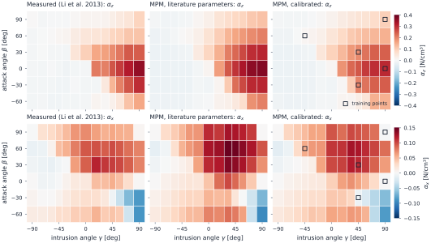


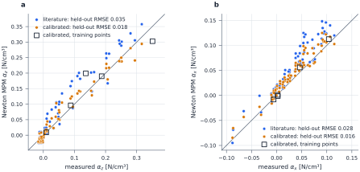


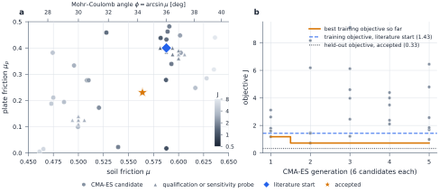


A2 Rod intrusion at controlled packing (Ruck et al., 2025)
Experiment. A robotic leg with direct-drive motors pushed a flat-ended aluminium rod of 12.7 mm diameter to 10 cm depth, commanded at 2 cm/s (the logged descent averages 0.6–1.2 cm/s per packing), into an air-fluidized bed in a 21.6 cm chamber with a porous floor. The loosest packing follows a full fluidization stopped abruptly, denser packings pulsed air up to the critical packing and tapping above it; the packing fraction follows from the bed height. The force comes from the motor current and leg kinematics. The open data hold 65 sand runs at 14 packings (φ = 0.55–0.615), 50 glass-bead runs at 14 packings (0.56–0.625) and 33 runs of sieved LHS-1 at 10 packings (0.49–0.58); runs marked as tests are excluded. Processing. For each run: the descent between the upper and lower toe-height plateaus; the in-air force over the first 15 mm of descent as background; the surface where the net force first exceeds 0.4 N for 5 mm; the slope K of a least-squares line between 2 and 9 cm. Divided by ρbgA, our slopes agree with the dimensionless K of the authors’ analysis notebook within about 10 %. Parameters. Grain densities 2500 kg/m³ for sand and glass and 2670 kg/m³ for LHS-1 and friction angles 31.5°, 23.9° and 35.8°, as in the authors’ notebook (the preprint does not state how the angles were measured); critical packing fractions 0.59, 0.595 and 0.53 (Ruck et al., 2025); rod friction 0.3 (assumed). Replica. Quarter symmetry; the chamber is a square of the cylinder’s half-width; bed 15 cm deep (the authors’ sand mass implies about 27 cm; 26 cm changes K by 1–3 %); 3 mm voxels (4.2 across the rod); 10 cm/s, 0.5 ms, at most 1000 iterations. Calibration. Friction is interpolated linearly between three anchors, at the loosest measured, the critical and the densest measured packing, each bounded to [0.3, 1.0]. Every third packing trains (5/9 for sand and glass, 4/6 for LHS-1). The scale is the larger of the median run-to-run standard deviation of K and 10 % of its median: 21.3, 9.1 and 14.8 N/m.
A3 Rod pull-out (Douglas et al., 2026)
Experiment. Rods hung from a fixed sieve while medium sand (Quikrete; D50 0.87 mm; bulk density 1630 kg/m³; tilt-table friction angle 30°) was sifted around them, and were then pulled vertically at constant speed with a load cell at 1 kHz; 8–11 trials per geometry. Data. Peak forces come from the published summary, because the force traces in the record end after 6 s, before most pulls. Fifteen straight rods are simulated: birch dowels of 4.8–12.7 mm and resin prints of 6.4–12.7 mm, 10 cm long; 12.7 mm dowels 5–25 cm long; a 5 cm dowel with its top 5–20 cm deep. The 3.2 mm print is left out because a quarter of its diameter is below the median grain size. Parameters. μ = sin 30°; rod–sand friction tan 21°, from the direct shear tests on wooden dowels that Douglas et al. adopt, also for the prints. Replica. Particles fill a quarter bed 12 rod diameters wide (at least 6 cm) around the buried rod and 5 cm below it; after 0.2 s of settling the rod is lifted with a 50 ms ramp at 5 cm/s (the experiment’s speed is not stated; about 2 cm/s judging by its Fig. 4); voxel a quarter of the diameter; the peak is the largest one-voxel mean of the resistance plus the rod weight. Calibration. Training on the 12.7 mm dowels 10 and 15 cm long; four held-out series (diameters, prints, lengths, burial depths); scale the trial-to-trial standard deviation of each geometry.
A4 Probe penetration in dry sandy loam (Mishra et al., 2018)
Experiment. Sandy loam (68.7 % sand, 19.3 % silt, 12 % clay), sun- and oven-dried at 105 °C for 10 h and sieved, filled an elliptical container of 22 × 16 × 20 cm at 1.56 g/cm³ for every trial. 3D-printed probes with flat, elliptical, parabolic, conical and root-like tips, 11 to 3 mm in diameter, were pushed at 10 mm/min to 100 mm on a universal testing machine; 4–7 runs per probe. Processing. Per-run force against crosshead travel from the published workbooks; a −1 N offset in eleven 7 mm runs is removed. The processed means reproduce the paper’s Table 1 exactly for 14 of 25 probes and within 1.3 N for the others. Replica. Quarter symmetry with a rectangular bed of the container’s half-axes, 20 cm deep (the fill height is not stated); tips are revolved triangle meshes with a tip length of D/1.12 (the paper’s length-to-diameter ratio of 1.12 is ambiguous, and its figures show tip lengths of 0.83–0.92 D); the simulated depth is shifted by the measured travel before the flat probe carries 0.2 N (1.7, 1.4 and 3.8 mm for 11, 9 and 7 mm); probe friction 0.4 (assumed); 10 cm/s; voxel a quarter of the diameter. The 5 and 3 mm probes would need 7.2 and 33 million particles per world and are left out (the 3 mm probes also buckled in the experiment). Calibration. Friction and cohesion on the 11 mm flat and conical probes, validated on the 11 mm elliptical and parabolic probes and on the four tips at 9 and 7 mm; root-like tips appear only in the prediction. The scale is the pooled relative run-to-run deviation (13 % at 20 mm to 7 % at 100 mm) times the measured mean.
A5 Plate sinkage in moist Cullinan sand (Kruger et al., 2023; Kruger, 2025)
Experiment. A Bevameter on an outdoor soil bin pushed a 150 mm circular plate at 16 mm/s to 80 mm into Cullinan sand, a fine sub-angular quartz sand (D50 149 µm, specific gravity 2651), at 6.5 % water. Five preparations range from raking only (method 1) through 20 or 40 indirect tamping blows (2, 3) and additional direct blows (4) to a vibrating plate compactor (5); dry densities were measured for methods 3, 4 and 5 (1390, 1511, 1538 kg/m³). The dataset (Kruger, 2025) holds 13 sinkage tests (6, 4, 1, 1 and 1 per method), 16 triaxial tests and 4 in-situ shear tests at 93 kPa normal stress. Processing. The record stores the tests as Python pickles; our loader resolves only numpy array reconstruction and never executes code from the files. Curves are resampled at 0.5 mm. The record of method 5 carries the compaction and void ratio of method 3; we use the densities of the article’s table 4. Parameters. Wet bulk density = dry density × 1.065. Friction from the peak stress ratio M of the drained triaxial tests (sin φ = 3M/(6 + M)), interpolated in dry density between the medium (about 1490 kg/m³) and dense (about 1565 kg/m³) samples: 33.0°, 34.5° and 37.5°. Cohesion 0: with these angles the in-situ shear tests (53–65 kPa) leave at most 1.4 kPa. Plate friction 0.5 (assumed). Replica. Quarter symmetry; 0.6 m half-width and 0.5 m depth (bin depth not stated; 0.4 and 0.65 m change pressures by ±2 %); 10 mm voxels (7.5 across the plate radius); 0.5 ms; 50 mm/s. Calibration. Friction and cohesion on method 4, validated on methods 3 and 5; scale 30 kPa, about 1.5 times the largest standard deviation of repeated tests (16–20 kPa at 80 mm for methods 1 and 2), to allow for variation between preparations that single tests cannot show.
A6 Strip plates in clay at 100 g (Zwanenburg et al., 2024)
Experiment. Rigid strip plates, 195 mm long across a 200 mm box (plane strain), 100 or 20 mm wide, smooth (polished aluminium) or rough (grip tape), were pushed at 5 mm/min into soft kaolin clay at 100 g to about 4 mm above the base. Tests 1 (100 mm, smooth) and 3 (20 mm, smooth) used the first clay batch, tests 8 (100 mm, rough) and 6 (20 mm, rough) the second. Laboratory tests on the first batch give the SHANSEP (Ladd & Foott, 1974) parameters S = 0.19, m = 0.8, a preconsolidation stress of 40 kPa and a saturated unit weight of 16.4 kN/m³. Processing. Contact is detected from the load rate in the 1 Hz logs of the open dataset (Zwanenburg et al., 2023); after contact the increase of shaft buoyancy minus the increase of plate weight in the centrifuge field is removed and the force divided by the plate area, giving the net resistance of clay with buoyant unit weight. Replica. A plane-strain slab four voxels thick through half the box, with a symmetry wall at the plate centre; rigid-plastic Tresca clay with buoyant density 672 kg/m³ and the laboratory strength of each particle’s initial depth; P1d strain, at most 2000 iterations; 0.1 m/s; scored every 2.5 mm from 5 mm until 12 mm of clay remain below the plate (Table A2). The per-step force records of Figure A4 show the contact artefacts discussed in Section 3.1.
| Test | Plate | Clay batch | Scored range [mm] | 2.5 mm, 1 ms | 2.5 mm, 0.5 ms | 2.5 mm, 0.25 ms | 1.25 mm, 0.5 ms | 1.25 mm, 0.25 ms |
|---|---|---|---|---|---|---|---|---|
| 1 | 100 mm, smooth | 1 | 5–82.5 | 8.9 / −4.5 | 9.6 / −0.1 | 8.8 / +5.6 | 9.3 / +2.8 | 11.0 / +5.7 |
| 3 | 20 mm, smooth | 1 | 5–82.5 | 15.7 / +0.1 | 22.3 / +15.7 | 36.0 / +29.3 | 12.0 / −4.6 | 12.5 / +3.4 |
| 8 | 100 mm, rough | 2 | 5–77.5 | 35.9 / +22.3 | 41.5 / +31.7 | 55.6 / +44.7 | — | — |
| 6 | 20 mm, rough | 2 | 5–80 | 20.3 / +19.5 | 42.8 / +42.1 | 68.3 / +67.3 | — | — |
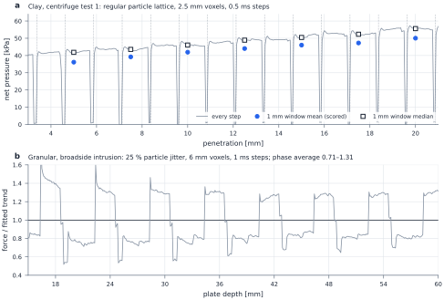


A7 Robot raking on synthetic logs
A Franka FR3 from the Newton asset repository (Newton contributors, 2026b) drags an 80 × 40 × 8 mm rake blade through a 300 × 160 mm bin with 60 mm of soil. Newton’s inverse kinematics converts each tool-tip path into 100 Hz joint trajectories for the real robot; in simulation the arm replays the logged joint positions and the rake is a kinematic body. The demonstration logs were generated by Newton for hidden parameters (μ = 0.62, τy = 250 Pa, tool friction 0.35) at a 1 ms step with another particle arrangement, averaged to 25 Hz, filtered at 8 Hz and perturbed by offsets and noise. The calibration (2 ms step, 10 mm voxels) fits μ, τy and the tool friction on three strokes and validates on two strokes with a faster drag, a lateral offset and a backward pitch (Table A3, Figures A5 and A6).
| Stroke | Group | Depth | Drag | Speed | Blade pitch | RMSE [N] | Peak drag logged / calibrated [N] |
|---|---|---|---|---|---|---|---|
train_shallow | training | 12 mm | 120 mm | 80 mm/s | 0° | 0.96 | 9.1 / 10.4 |
train_deep | training | 45 mm | 120 mm | 80 mm/s | 0° | 1.40 | 42.9 / 46.7 |
train_pitched | training | 30 mm | 120 mm | 80 mm/s | +20° | 1.01 | 22.7 / 23.3 |
holdout_fast_offset | held out | 25 mm | 120 mm | 100 mm/s, 10 mm offset | 0° | 0.99 | 20.7 / 21.0 |
holdout_pitched_back | held out | 35 mm | 100 mm | 60 mm/s | −20° | 1.96 | 34.8 / 33.5 |
| Parameter | Hidden (generated the logs) | Baseline guess | Calibrated | Error of calibrated |
|---|---|---|---|---|
| Soil friction μ | 0.620 | 0.500 | 0.653 | +5.4 % |
| Cohesion τy | 250 Pa | 100 Pa | 168 Pa | −32.9 % |
| Tool friction μt | 0.350 | 0.500 | 0.533 | +52.4 % |
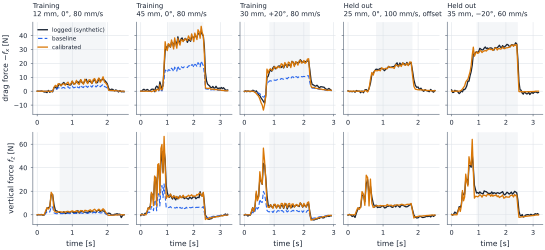


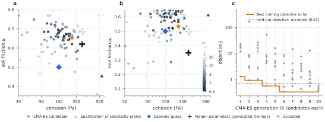